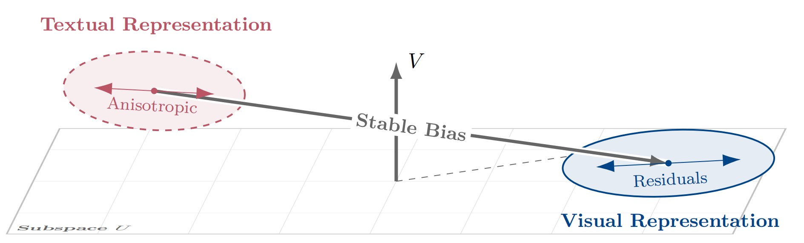
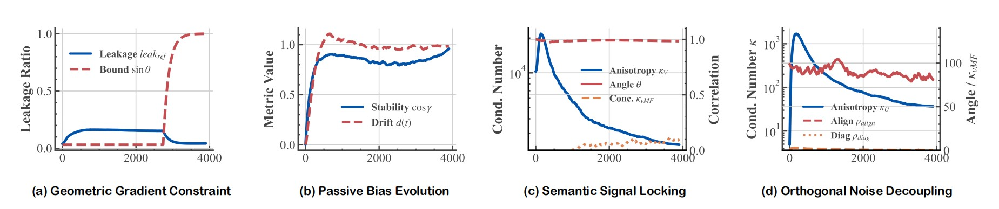
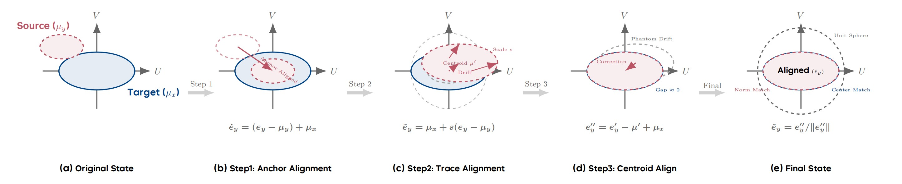
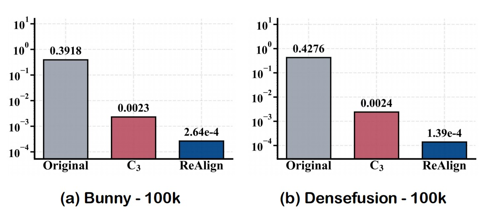
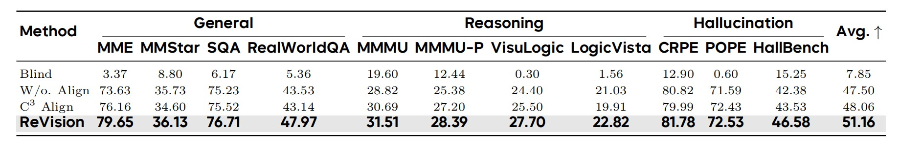

Paper Walkthroughs
Modality Gap–Driven Subspace Alignment Training Paradigm For Multimodal Large Language Models
"Hidden Harmony Is Better Than the Obvious."
— Heraclitus
What is the Modality Gap?

Figure 1. Geometric decomposition of the modality gap. Unlike prior isotropic assumptions, the gap consists of a systematic Stable Bias and Anisotropic Residuals within a frozen reference frame.
When we train a multimodal contrastive model like CLIP on massive image-text pairs, we expect that an image and its paired caption should end up in roughly the same region of the joint embedding space. After all, they describe the same thing. But a curious geometric anomaly persists: even after extensive training, image embeddings and text embeddings that express identical semantics do not coincide—they systematically occupy distinct, offset regions of the shared space. This is the Modality Gap.
To see why this matters, think about the opportunity it creates. If we can precisely characterize and bridge this geometric misalignment, we can use abundant, cheap text data as a stand-in for expensive image-text pairs when training Multimodal Large Language Models (MLLMs). Text data is everywhere; high-quality paired image-text data is not.
Prior work has tried to close this gap, but has largely relied on a critical oversimplification: treating the residual noise as isotropic—uniformly distributed in all directions, like a sphere around the mean. This paper argues that assumption is geometrically wrong, and the consequences of getting it wrong are real.
The Isotropic Fallacy
The dominant prior framework (C3) describes the modality gap as a centroid shift plus isotropic random noise. The centroid correction works well, but then they add spherical Gaussian noise to the text representations to "spread them out" to match the image distribution. The paper makes a sharp critique: imposing an isotropic prior onto an inherently anisotropic manifold induces a spectral whitening effect, which dilutes the fine-grained semantic hierarchy and distorts the angular topology of the embedding space.
In plain terms: high-dimensional representations don't distribute uniformly in all directions. They have a rich hierarchical structure—some semantic directions are much more important than others (think of a covariance matrix with a few dominant eigenvalues and a long tail of small ones). Injecting isotropic noise flattens this hierarchy, destroying exactly the structure that makes representations useful for downstream tasks like reasoning and fine-grained perception.
A Formal Decomposition of the Modality Gap
The paper's first main contribution is to move beyond simple mean descriptions. They train a contrastive dual-encoder from scratch and carefully track how the modality gap evolves throughout training, introducing a Fixed Reference Frame to decompose the gap precisely.
Setting Up the Reference Frame
Let \(e_x(t), e_y(t) \in \mathbb{R}^d\) be unit-normalized embeddings of paired image \(x\) and text \(y\) at training step \(t\). They fix a reference time \(t_0\) and compute the empirical covariance of embeddings at that time:
They then take the top-\(r\) eigenvectors (by an energy threshold) to define the effective task subspace:
Here, \(U\) is the subspace where gradients concentrate and semantic information lives. \(V\) is its orthogonal complement—a "null channel" that gradients barely touch.
Bias–Residual Decomposition
For a paired example, the modality gap is \(\Delta(t) := e_x(t) - e_y(t)\). Under the fixed frame, this decomposes into four clean components:
where \(\beta(t) = P_U \mathbb{E}[\Delta(t)]\) is the Principal Modality Bias (PMB)—the mean component inside the task subspace; and \(\gamma(t) = P_V \mathbb{E}[\Delta(t)]\) is the Constant Orthogonal Bias (COB)—the mean component in the orthogonal complement. The terms \(\delta(t)\) and \(\zeta(t)\) are the corresponding zero-mean residuals.
Four Key Empirical Findings
By tracking these components through training, the paper uncovers four fundamental geometric properties:

Figure 2. Geometric Statistics of the Modality Gap. (a) Gradients are confined within the evolving task subspace. (b) The orthogonal bias exhibits high step-to-step stability with only slow cumulative drift. (c) In subspace U, residual variance is locked to the gradient covariance structure. (d) In subspace V, the static bias and dynamic noise are geometrically decoupled at ~90°.
- Geometric Gradient Constraint. Gradients are highly concentrated within the task subspace \(U_t\). The fraction of gradient energy leaking into \(V\) is tightly bounded by \(\sin\theta(U_t, U)\), the principal angle between the instantaneous and reference subspaces. Near convergence, this angle shrinks, making corrections in \(V\) nearly impossible through standard training.
- Passive Bias Evolution. The COB component \(\gamma(t)\) in the orthogonal complement drifts very slowly—it is not being actively optimized. This is a passive byproduct of subspace rotation and L2-normalization, not direct gradient descent. The model simply cannot "see" this component well enough to correct it.
- Semantic Signal Locking (U-side). In the principal subspace \(U\), the condition number of the residual covariance \(\kappa(\Sigma_U)\) remains extremely high (over \(10^3\)) throughout training—meaning the variance is highly concentrated on a few principal directions rather than spread uniformly. Moreover, these directions align tightly with the gradient covariance structure, confirming that residual fluctuations are coupled to semantic importance.
- Orthogonal Noise Decoupling (V-side). In the complement \(V\), the residual noise \(\zeta(t)\) also maintains a highly stretched, anisotropic shape (\(\kappa > 10\)). Crucially, the bias vector \(\gamma(t)\) maintains an angle of approximately \(90°\) relative to the principal noise direction—meaning the static bias and dynamic noise are geometrically decoupled and orthogonal.
The Phantom Drift Problem
This last finding leads to a subtle but important phenomenon called Phantom Drift. Because \(\zeta(t)\) is anisotropic (ellipsoidal rather than spherical) in \(V\), and because embeddings are projected onto the unit hypersphere via L2-normalization, the angular distribution of the data gets distorted. Even after correctly subtracting the centroid \(\gamma(t)\) in Euclidean space, the nonlinear projection creates a spurious directional bias on the hypersphere. In math:
The anisotropy of \(\zeta\) causes the effective centroid on the sphere to drift away from the true mean direction. This is not corrected by simply shifting the mean, because the bias and the noise are orthogonal—correcting one leaves the other untouched. Any alignment strategy that ignores the shape of the noise will suffer from this phantom drift.
ReAlign: Training-Free Modality Alignment
Armed with this precise geometric understanding, the paper introduces ReAlign—a closed-form, training-free strategy to map text representations into the image representation distribution. It proceeds in three stages:

Figure 3. The ReAlign Pipeline. (a) Original state with misaligned centroids. (b) Anchor Alignment shifts the source to the target mean. (c) Trace Alignment scales the energy, inducing a centroid drift µ′. (d) Centroid Alignment corrects the Phantom Drift. (e) Final re-normalization yields the aligned embedding.
- Anchor Alignment: Correct the first-order (mean) bias by centering the source and shifting to the target anchor.
- Trace Alignment: Match the global energy scale (trace of the covariance) via a scalar multiplication, preserving anisotropy.
- Centroid Alignment: Correct the Phantom Drift induced by spherical projection via an explicit re-centering step.
Step 1: Anchor Alignment
Let \(\mu_y = \mathbb{E}[e_y]\) and \(\mu_x = \mathbb{E}[e_x]\) be the population means of the text and image embeddings, respectively. We center the source and shift to the target:
This eliminates the first-order distributional shift. Simple enough—and it's exactly what C3 does. But the paper shows this is nowhere near sufficient on its own.
Step 2: Trace Alignment
Next, we match the global variance scale. Define the trace of centered embeddings as:
We compute a global scaling factor \(s = \sqrt{T_x / T_y}\) and apply the affine transformation:
A key insight here is that this is a scalar scaling, not a full covariance matching. Scalar multiplication strictly preserves the covariance structure and anisotropy of the source modality—the semantic hierarchy of the data is not distorted. This is the key property that distinguishes ReAlign from blockwise covariance alignment, which attempts a more aggressive full second-moment match and catastrophically destroys local semantic topology (retaining only 10% of semantic neighborhoods, compared to 87% for ReAlign).
After this step, we apply a spherical projection: \(e'_y = \tilde{e}_y / \|\tilde{e}_y\|\).
Step 3: Centroid Alignment
The spherical projection in Step 2 induces exactly the Phantom Drift we analyzed above. The actual centroid of \(e'_y\) drifts to some \(\mu' = \mathbb{E}[e'_y] \neq \mu_x\). We correct this explicitly:
This pulls the distribution back to the correct anchor on the hypersphere. The final aligned embedding is obtained by re-normalizing:
The result: on the Bunny pretraining dataset, the original modality gap of 0.39 is reduced by C3 to only 0.0023 (a geometric bottleneck due to isotropic assumptions), while ReAlign drives it down to \(2.64 \times 10^{-4}\)—a reduction of another order of magnitude. On DenseFusion, similar results hold (0.43 → 0.0024 → \(1.39 \times 10^{-4}\)).

Figure 4. Modality gap between aligned centroids on Bunny and DenseFusion. C3 stagnates at a geometric bottleneck (~0.0023) due to isotropic assumptions, while ReAlign reduces the gap to the 10⁻⁴ scale.
ReVision: A Scalable Training Paradigm
Building on ReAlign, the paper proposes ReVision, a two-stage training pipeline for MLLMs that uses text-only pretraining to avoid expensive paired image-text data.
Stage 1: Modality Substitution Pretraining
The key idea is to use the ReAlign operator \(S_{y \to x}\) to convert text embeddings from a large unpaired text corpus into pseudo-visual embeddings:
These pseudo-visual embeddings are then used to train an MLP adapter \(\varphi\) (with the LLM backbone \(\theta\) frozen) to reconstruct the original text conditioned on the pseudo-visual input:
This is inexpensive: text is abundant and cheap. The model absorbs broad world knowledge and visual semantics purely from text, without ever seeing a single image. Because ReAlign preserves the geometric statistics of the visual modality, the pseudo-visual embeddings are geometrically compatible with real image embeddings.
Stage 2: Visual Instruction Tuning
Real images are then introduced for standard supervised fine-tuning, supplementing the fine-grained visual details that statistical alignment inevitably abstracts away:
During inference, the model simply takes real images directly—no special calibration needed, since the alignment was in the direction text → image (not the reverse), giving single-image inference without overhead.
Experimental Results
Alignment Quality

Table 1. Performance comparison of different geometric alignment strategies across General, Reasoning, and Hallucination benchmarks. ReVision achieves the highest average score of 51.16.
Across multiple benchmarks, ReVision achieves an average score of 51.16, outperforming C3 alignment (48.06), raw text without alignment (47.50), and text-only blind evaluation (7.85). The gains are consistent across general perception, complex reasoning, and hallucination tasks. Particularly notable: in reasoning-intensive benchmarks, ReVision's advantage grows because C3's noise injection erodes the fine-grained semantic hierarchy essential for multi-step reasoning. In hallucination metrics, correcting Phantom Drift prevents the projection layer from overfitting to spurious directional biases.
Scaling vs. Paired Data
The most striking result: ReVision-2M (training on 2M unpaired text samples) outperforms a baseline trained on 1M ground-truth image-text pairs (49.75 vs. 48.91), at only 74% of the data cost. This supports the paper's central claim: how you align matters as much as what you align. Simple mean-shifting (as in the competing Unicorn method) yields only 43.94, while ReVision-2M reaches 49.75—a dramatic gap, attributable entirely to the geometric precision of the alignment strategy.
The Long-Caption Paradox
An intriguing side finding: counterintuitively, models pretrained on shorter captions consistently outperform those trained on longer, denser captions. The paper attributes this to three structural constraints. First, long captions exceed encoder context windows and get truncated, creating a supervision mismatch between the complete visual embedding and the truncated text. Second, long captions produce a diffuse, high-entropy covariance structure (effective rank ≈ 52.9) that is harder to align statistically than the compact manifold of short captions (effective rank ≈ 41.0). Third, dense captions contain large amounts of non-visual linguistic noise—abstract inferences, contextual associations, subjective interpretations—that geometrically pull the semantic centroid away from the visual anchor, widening the initial modality gap by ~30%.
Why Does the Modality Gap Persist at All?
The paper provides a clean theoretical explanation: the modality gap is an architectural inevitability under standard multimodal contrastive learning, arising from three necessary structural conditions acting together:
- Dual-encoder isolation: Two independent encoders with different architectures initialize with non-zero mean differences, creating the biases \(\beta, \gamma\) from the start.
- Enforced spherical topology: L2-normalization at the encoder outputs is the geometric source of Phantom Drift. Anisotropic noise \(\zeta\) with \(\mathbb{E}[\zeta] = 0\) in Euclidean space produces a non-zero centroid shift on the sphere: \(\mathbb{E}[(\mu + \zeta)/\|\mu + \zeta\|] \neq \mu/\|\mu\|\).
- Dot-product similarity head: InfoNCE gradients are linear combinations of contrastive-set embeddings, hence \(\nabla \mathcal{L}(t) \in U_t^{(B)}\). As training converges, gradients concentrate in \(U_t\), leaving \(V\) as a null space that is never directly optimized. The orthogonal bias \(\gamma\) persists precisely because gradient signals cannot reach it.
This theoretical grounding is important: it explains why naive training alone cannot close the gap, and why explicit geometric rectification—like ReAlign—is necessary.
Summary
This paper makes several genuinely novel contributions that connect theory to practice in a satisfying way. The Fixed-frame Modality Gap Theory gives us a precise mathematical vocabulary for talking about something that was previously described only loosely. The discovery that the modality gap has both stable bias and anisotropic residual structure—not isotropic noise—is the key insight that unlocks everything downstream. ReAlign's three-step procedure is elegant: it matches first-order statistics, then second-order global scale (without destroying anisotropy), then corrects the nonlinear Phantom Drift from spherical projection. And the practical payoff is clear: text-only pretraining with properly aligned representations can surpass expensive paired image-text baselines at lower cost.
For those working on multimodal models, vision-language representation learning, or data-efficient training, this paper offers both a useful theoretical lens and a practical toolkit. Check out the full paper and code at the links above!